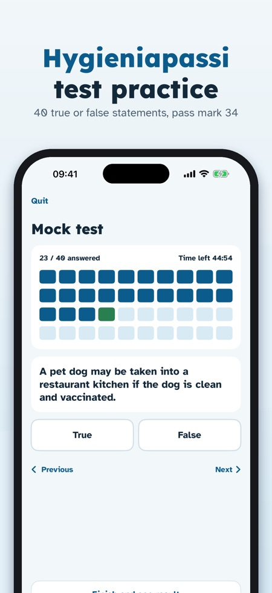
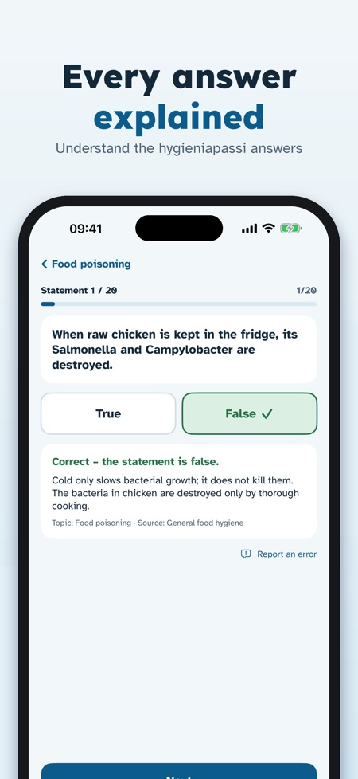
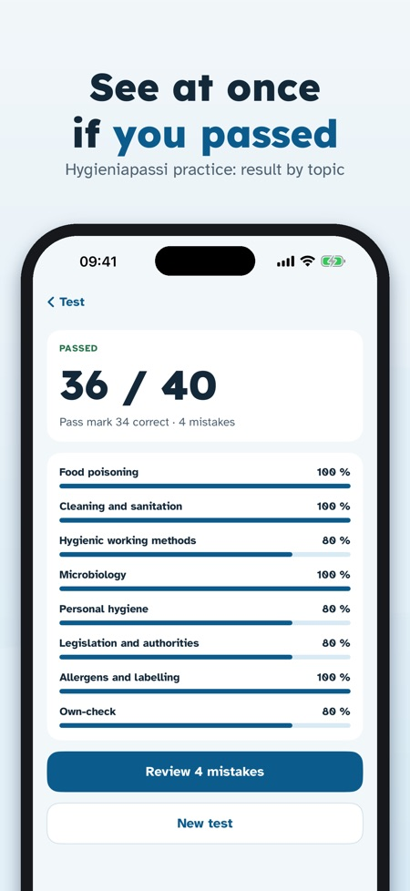

Food safety & hygiene test. 448 true/false statements in English, Finnish or Swedish: an explanation for each, a timed 40-statement mock test, temperatures and test-day reminders.



Hygieniapassi Treeni helps you practise for the Finnish hygiene passport test (hygieniapassi) with true/false statements like the ones in the test – in English, Finnish or Swedish.
One mock test, part of the statements and the glossary can be used without a purchase. A one-time purchase unlocks all statements, unlimited mock tests, mistake review and the temperature page. No subscription.
Hygieniapassi Treeni is an independent practice app. It is not an app of the Finnish Food Authority (Ruokavirasto) and does not issue the hygiene passport; you get the passport from an approved tester. Statements are our own, written from the published competence requirements.